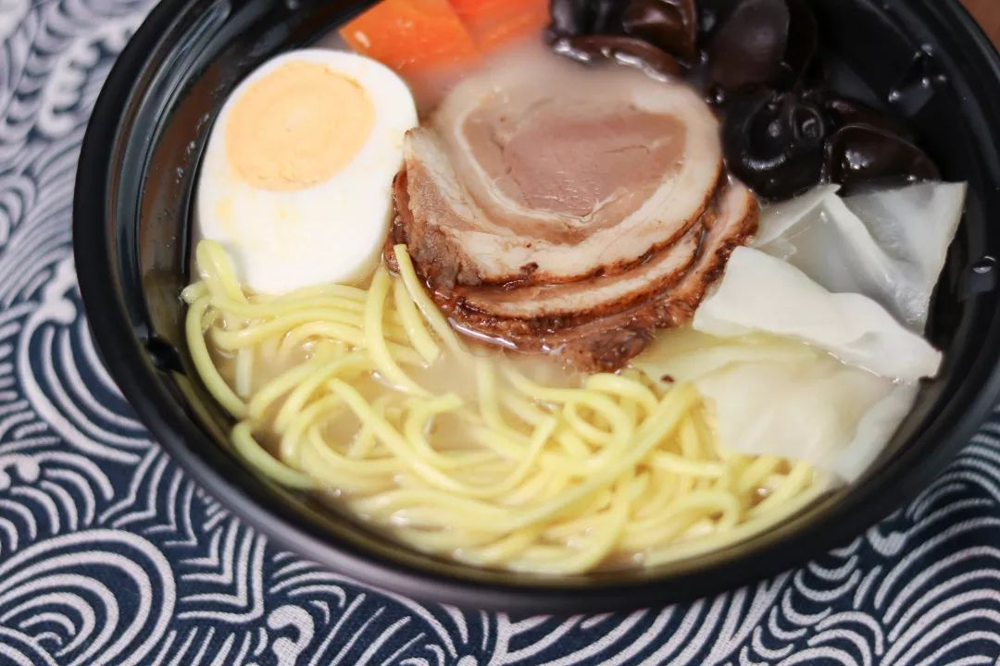

Recipe Detail
Recipe Detail
Ramen

Required ingredients
List of ingredients
- Pork bones - usually leg bones or neck bones
- Noodles - specialized ramen noodles
- Pork slices - like pork belly or pork loin
- Vegetables - such as bok choy, spinach, green onions, etc.
- Aromatics - like minced garlic, minced ginger, etc.
- Seasonings - such as soy sauce, miso, salt, sugar, etc.
- Garnishes - like nori, egg (soft boiled or hard boiled), fish cake, mushrooms, bamboo shoots, bean sprouts, etc.
- Chicken bones - to enhance the depth of the broth (optional)
Other
-
- Difficulty level: medium
- Required time: 20min
Steps
- Clean the pork bones and place them in a large pot filled with enough water.
- Bring to a boil over high heat, then reduce to medium-low and simmer for 1-2 hours, skimming off any foam that forms on the surface.
- Add chicken bones (if using), aromatics, and seasonings, and continue to simmer for another 1-2 hours, until the broth turns milky white and thickens.
- Cook the noodles in a separate pot according to package instructions or until done.
- Drain the noodles and place them in a bowl.
- Ladle the pork bone broth over the noodles, then add the pork slices and your desired vegetables and garnishes.
- Garnish with green onions and other condiments like chili oil or soy sauce, adjusting to taste.
- Enjoy your piping hot bowl of Japanese Tonkotsu Ramen!